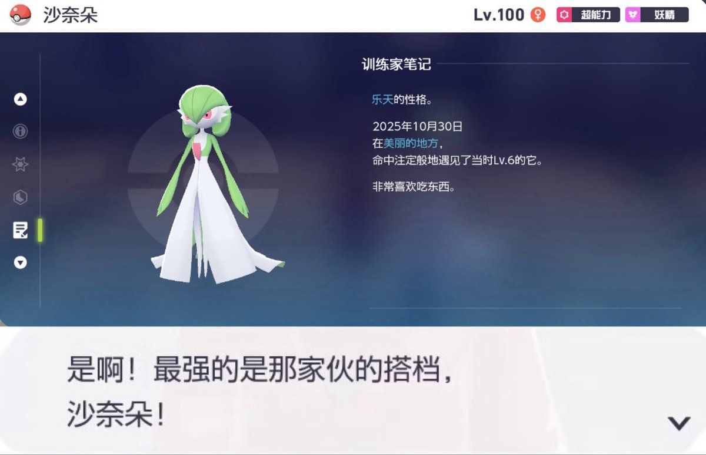

時璃風医詩🍥🌈
@hagishigure
@Taco_sama233 我第一次通關合眾地區帶的是在冰庫遇見的迷你冰和在矢車森林遇到的木棉球雙打。
我到現在都覺得雙倍多多冰和風妖精是最可愛的Pokemon。

Taco🌮️
@Taco_sama233
Lv.100！终于！
从Lv.6开始，命中注定般地遇见，
我知道的，我会带你登临至高！
“最强的是那家伙的搭档，沙奈朵！” https://t.co/ddCnMaY8nK https://t.co/n50AT9eqh7